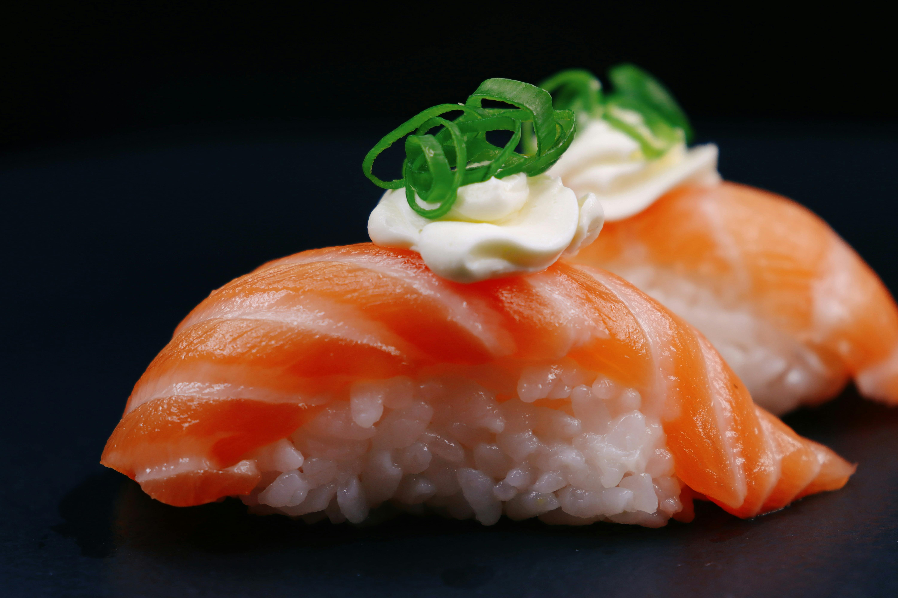

Nigiri

Niri consists of small, hand-pressed mound of seasoned white
rice topped with a single slice of fresh raw fish or seafood.
Ingrediens:
For the sushi rice:
- 300 g - Japanese short-grain rice
- 45 ml - rice vinegar
- 5 g - salt
For the topping:
- 200 g - Sashimi grade fish, for example salmon or tuna
- 5 g - Wasabi paste (optional)
For serving
- soy sauce
- pickled ginger
- wasabi
Steps:
-
Prepare the Sushi Rice - rinse the rice under cold water
until the water runs clear, then cook it according to your preferred
method. While the rice is still hot, transfer it to a wide bowl.
Gently fold in the rice vinegar, and salt using a spatula.
Let the rice cool to room temperature before handling.
-
Slice the Fish - using a very sharp knife, cut your sashimi-grade
fish into thin, rectangular slices. Each slice should be roughly 3 cm wide
and 7 cm long, and thick enough so that it doesn't tear.
-
Shape the Rice - prepare a small bowl of water with a splash of rice
vinegar to keep your hands wet, which prevents the rice from sticking.
Pick up about 15g to 20g of the seasoned rice and gently squeeze it in your
palm to form a firm, small, oval-shaped mound.
-
Assemble the Nigiri - if using wasabi, dab a tiny amount onto the
underside of the fish slice. Drape the fish over the top of the rice mound.
Use your thumb and index finger to gently press the fish and rice together
so they hold their shape.
-
Serve - serve immediately with soy sauce and pickled ginger on the side.
When eating, dip the nigiri fish-side down into the soy sauce to prevent the
rice from absorbing too much liquid and falling apart.
Home